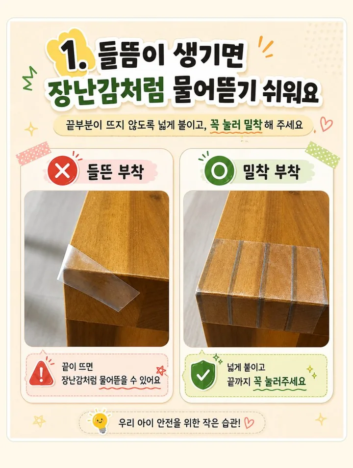
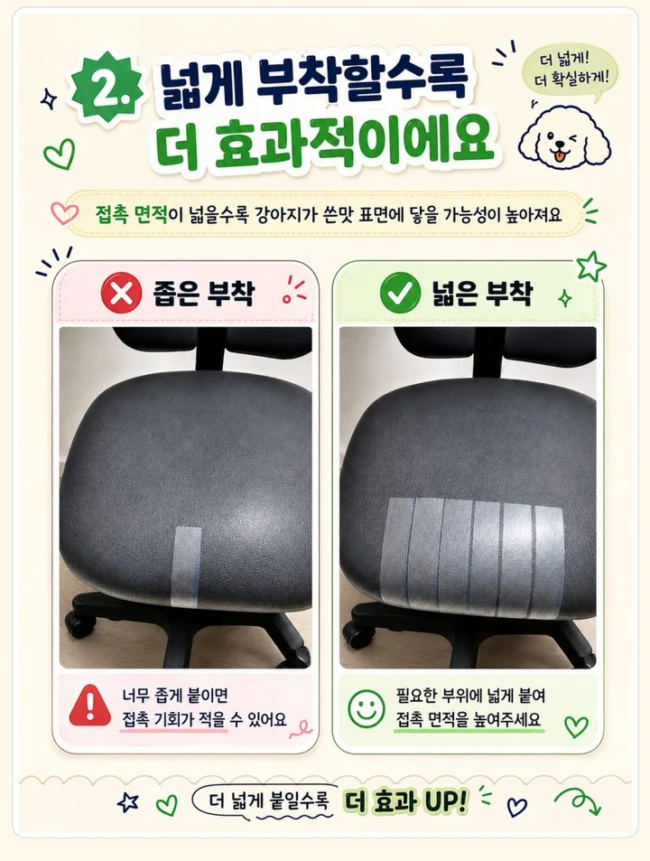
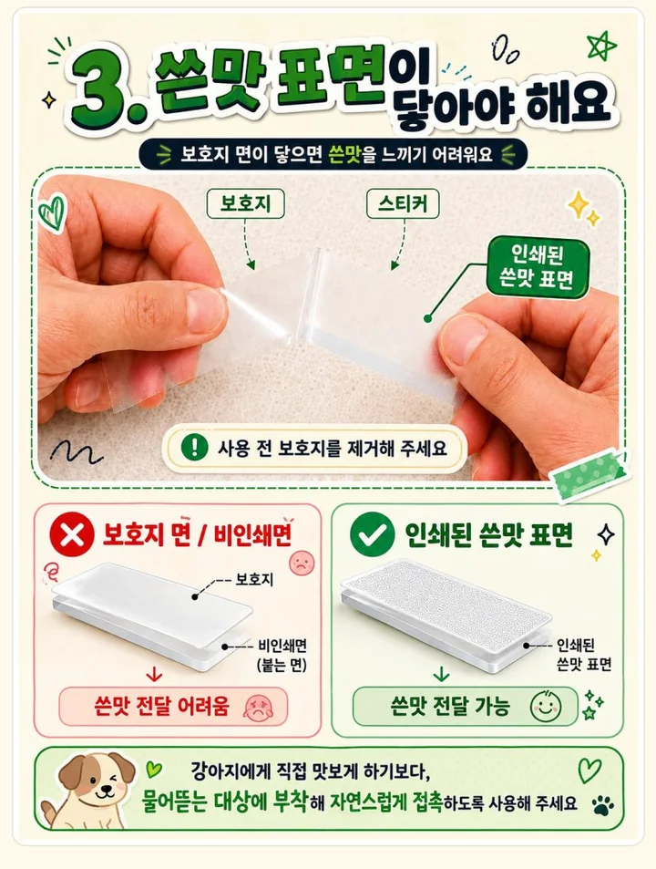
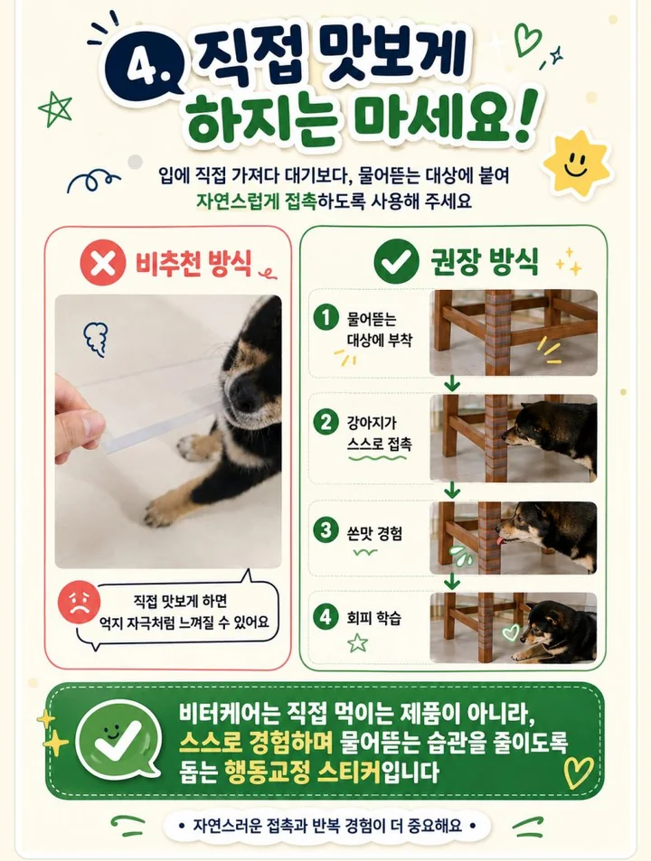
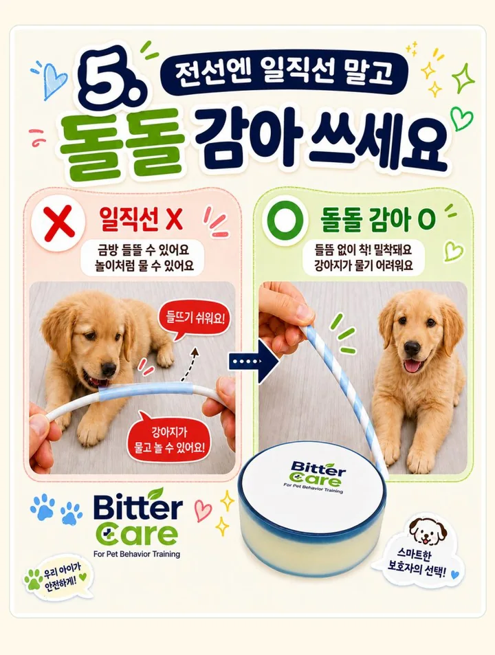

비터케어,
이렇게 사용하세요.
실제로 입이 닿는 범위를 넉넉하게, 끝부분은 들뜨지 않게. 부착 위치와 밀착 상태가 중요해요.

처음 붙이는 날의 4단계.
닦고, 자르고, 붙이고, 관찰하기. 순서대로 따라 해보세요.
표면 청소
먼지와 유분을 제거하고 완전히 건조합니다. 접착력이 떨어지지 않도록 준비해 주세요.
필요한 만큼 재단
실제 무는 범위보다 조금 넉넉하게 잘라 준비합니다.
정확한 위치에 부착
이형지를 제거하고 실제 접촉 위치에 들뜨지 않게 밀착합니다.
반응 관찰
처음 며칠간 반응을 보며 위치를 보완하고 필요하면 새 스티커로 교체합니다.
이형지가 잘 안 떨어진다면.
사진 속 분리 방법을 확인해 주세요. 칼을 사용할 때는 평평한 작업대에서 손과 제품의 손상에 주의해 주세요.

필요한 길이만큼 자르기
붙일 위치보다 조금 넉넉하게 재단하면 마감이 깔끔합니다.

표면만 살짝 칼집
분리할 부분에 아주 얕게 칼집을 냅니다. 제품을 관통하지 않도록 주의하고, 손에 들고 자르지 마세요.

천천히 벌려 분리
칼집 낸 부분부터 양손으로 부드럽게 벌려 분리합니다.
실전에서는 이 다섯 가지.
붙이기 전, 위치·범위·밀착 상태를 함께 확인해 주세요.

들뜸 없이 밀착 부착

필요한 부위에 넓게 부착

인쇄된 쓴맛 표면 확인

직접 맛보게 하지 않기

전선에는 짧게 감아 부착
이미지를 누르면 크게 볼 수 있어요. 모바일에서는 옆으로 넘겨 다섯 가지 가이드를 확인하세요.
비터케어는 절연·감전 방지 제품이 아닙니다. 손상된 전선에는 사용하지 말고 전원을 분리한 상태에서 부착해 주세요.
강아지마다 반응은 다를 수 있습니다.
쓴맛에 대한 민감도, 물어뜯기 습관의 강도, 실제 접촉 위치와 사용 환경에 따라 반응은 달라질 수 있습니다. BitterCare는 물어뜯기 행동 관리를 돕는 보조 제품이며, 처음 사용할 때는 반응을 관찰하면서 위치를 조정해 주세요.
사용 위치가 맞는지
먼저 확인하세요.
가구, 문틀, 전선 보호 부위 등 실제로 입을 대는 가구나 문틀처럼 입이 닿는 곳에 적용하는 것이 핵심입니다.
사용하다 막히는 순간에도, 함께할게요.
부착 위치부터 제품 문의까지. 상황을 남겨주시면 확인 후 이메일로 답변드리겠습니다.